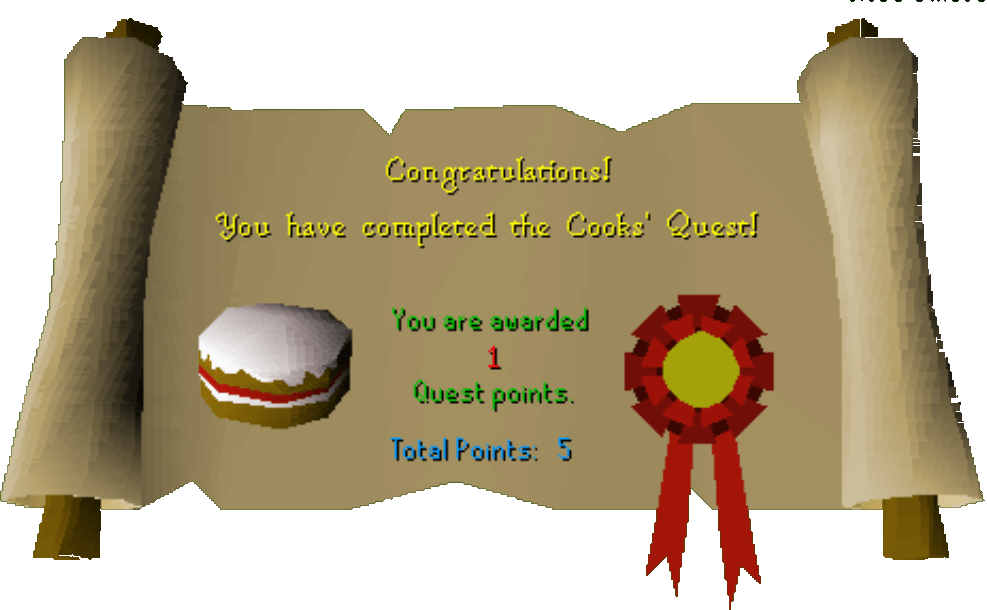

Cook's Assistant
Description: The Lumbridge castle cook is in a mess. It is the Duke of Lumbridge's birthday and the cook is making the cake. He needs a lot of ingredients and doesn't have much time.Difficulty: Novice
Length: Short
Items & Skills Needed:
Reward: 1 Quest point, 300 Cooking XP, permission to use the Cook's range
Instructions:
Talk to the Cook in the Lumbridge Castle. He will ask you to help him get the ingredients for the cake, as he forgot to buy them. Tell him that you will help.
Getting the ingredients
Flour: Get a pot in the Lumbridge Castle. Then head northwest. You should find a windmill. There is a grain field west of the windmill. Pick one grain and go into the windmill. Go up to the top floor and use your grain on the hopper. Operate the hopper and go back down. Use your pot to collect the flour.
Egg: You can find some eggs in a farm located northeast of Lumbridge. After you find the farm, there should be some chickens there. You can find some eggs near the chickens.
Milk: There should be a house near the chickens in the farm. Enter the house and get a bucket. Exit the farm and go to the east of this farm. You will find some cows there. Use the Bucket on a dairy cow to get a Bucket of milk.
After you get all the ingredients, return to the cook and he will reward you.
Congratulations, Quest Complete!

This quest guide was written on RuneHQ by henry-x. Thanks to DNKevin and Weezy for corrections.
This quest guide was entered into the database on Sat, Feb 21, 2004, at 04:19:36 PM by Weezy and CJH and was last updated on Mon, Aug 02, 2004, at 07:38:58 AM.